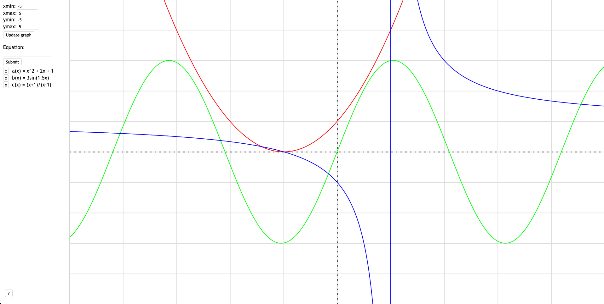
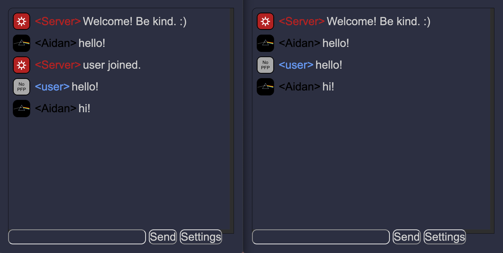

:aidan_carey
2nd Year Computer Science Student at Acadia University
2nd Year Computer Science Student at Acadia University
Hi, I'm Aidan! I'm an aspiring computer programmer striving to perfect my craft and get experience in the field. I'm currently working towards getting my Bachelor in Computer Science at Acadia University. My favourite language is Ruby.
A Ruby on Rails web application where customers can book reservations for a campsite.
An iOS and macOS app to get the current menu of Acadia University's dining hall.
A graphing calculator made with JavaScript and HTML canvas.
A Discord-like chatroom written in JavaScript and NodeJS using WebSockets.
A sorting algorithm visualization written in C++ with SFML that showcases different sorting algorithms.